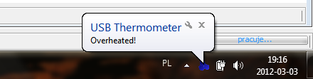

Wyzwalacz powiadomień systemowych wyświetla powiadomienie systemowe. Przykładowe powiadomienie systemowe może
wyglądać następująco:

Ewentualnie może zostać również odtworzony sygnał dźwiękowy z pliku WAV.
W celu ustawienia Wyzwalacza, oprócz podstawowych ustawień wspólnych dla wszystkich Wyzwalaczy,
konieczne jest skonfigurowanie dodatkowych ustawień:
- Wyświetl powiadomienie na pasku systemowym Włącza powiadomienie systemowe.
- Nagłówek Nagłówek powiadomienia systemowego.
- Tekst Wyświetlany komunikat w powiadomieniu systemowym.
- Odtwórz dźwięk Włącza odtwarzanie dźwięku w tym Wyzwalaczu.
- Plik muzyczny Ścieżka do pliku WAV odtwarzanego podczas zdarzenia.
|